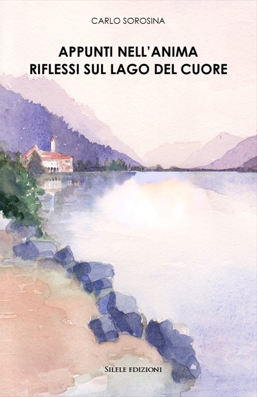

Un viaggio tra memoria, emozioni e piccoli gesti che continuano a vivere nel tempo.

«Ciò che il cuore dona non sarà mai perduto.»
Appunti nell'anima. Riflessi sul lago del cuore raccoglie poesie, aforismi e riflessioni nate dall'osservazione della quotidianità, dei legami umani e dei luoghi che continuano a vivere nella memoria.
Tra ricordi, silenzi e paesaggi del Lago d'Iseo, il volume accompagna il lettore in un percorso di ascolto interiore nel quale emozioni, assenze, speranze e tracce del passato diventano occasione di riflessione.
Attraverso una scrittura semplice e meditativa, Carlo Sorosina invita a rallentare e a riconoscere il valore di ciò che spesso viene considerato piccolo o ordinario, ma che continua a lasciare un segno nel tempo.
Come uno specchio che non perde la memoria, il lago non si limita a riflettere il cielo, ma trattiene nelle sue increspature ogni soffio dell’anima.
Le emozioni non sono lacrime ferme nel tempo, ma ricordi che, spinti dal vento, diventano parte di una danza mossa dalle onde.
Chi possiede uno spirito semplice sa restare in attesa, ascoltando il battito segreto che si muove tra i suoi colori.
Perché tra queste acque silenziose, ogni frammento di vita diventa una scintilla di luce che sfida l’oblio.
E ciò che il cuore dona resta come un segno sull’acqua, anche quando il lago torna immobile.
Continua il viaggio tra queste pagine.
Continua il viaggio tra queste pagine.
Titolo: Appunti nell'anima. Riflessi sul lago del cuore
Autore: Carlo Sorosina
Editore: Silele Edizioni
ISBN: 978-88-3348-329-0
Pagine: 73
Prezzo di copertina: €12
Carlo Sorosina è autore di testi poetici e narrativi dedicati ai piccoli gesti, ai legami umani e alle tracce che essi lasciano nel tempo. Radicato nel territorio del Sebino e del Lago d'Iseo, trova nella memoria e nelle relazioni quotidiane le principali fonti della propria ispirazione letteraria.
index.html ← Torna alla pagina autore